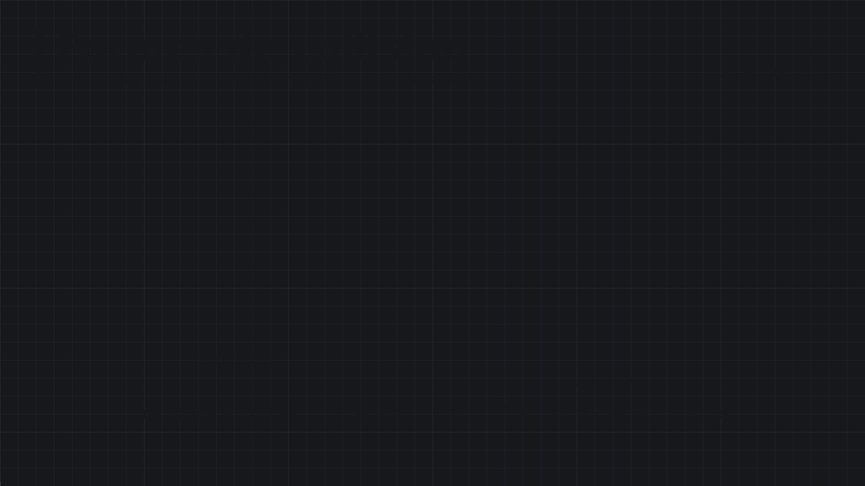

7 · Collisions & physique
Ce qui touche quoi, ce qui est détecté, ce qui tombe et rebondit. Deux moteurs distincts à ne pas confondre : le système de collision (qui répond aux requêtes et aux événements) et la simulation physique (Chaos, qui fait bouger les corps).
Object Type, canal & réponse
Les bases — formes de collision, Ignore / Overlap / Block, événements Begin Overlap et Hit — sont dans 2 · Personnage & Input. Voici le modèle complet, celui qu'il faut comprendre dès qu'on sort des réglages par défaut.
| Notion | Se règle dans | Question à laquelle elle répond |
|---|---|---|
| Object Type | Collision → Object Type | « Qu'est-ce que je suis ? » — WorldStatic (décor fixe), WorldDynamic (décor mobile ou scripté), Pawn, PhysicsBody (corps simulé), Vehicle, Destructible, ou un type personnalisé |
| Réponse à un Object Type | Collision → Object Responses | « Comment je réagis à un objet de ce type ? » — Ignore, Overlap ou Block |
| Réponse à un Trace Channel | Collision → Trace Responses | « Comment je réagis à une requête sur ce canal ? » — Visibility, Camera, ou un canal personnalisé |
Un composant de collision (boîte, sphère, capsule, Static Mesh) sert à deux choses distinctes, et Collision Enabled décide laquelle est active :
| Requête (Query) | Simulation (Physics) | |
|---|---|---|
| Question posée | « est-ce que quelque chose est là ? » | « où va cet objet ? » — Chaos calcule le mouvement |
| Ce que ça fait | overlaps, rapports de Hit, Line / Sphere / Box Trace, sweeps — ne déplace rien, répond seulement | gravité, masse, forces, rebonds, friction, contacts — écrit la transform à votre place |
| Collision Enabled | Active | Pour |
|---|---|---|
No Collision | rien | décoration pure, ragdoll pas encore activé |
Query Only | overlaps, traces, mouvement bloqué (sweep) | triggers, zones de détection, la plupart des objets de décor |
Physics Only | simulation seule | corps physiques que l'on ne veut pas interroger |
Query and Physics | les deux | le cas général d'un objet solide et interrogeable |
Probe Only / Query and Probe (versions récentes d'UE5) | une probe détecte un contact bloquant (génère un Hit) sans être ni une requête ni une collision physique | détecter l'arrivée d'un projectile sans que celui-ci perturbe les mouvements du joueur |
Une trace par canal demande « quels composants répondent Block au canal X ? » ; une trace par type d'objet demande « quels composants sont de type Y ? ». Les overlaps et le mouvement (sweep) utilisent, eux, les Object Responses du composant qui bouge. Dans tous les cas, c'est la réponse la plus faible des deux côtés qui l'emporte (voir le tableau de Personnage & Input).
Interroger un Trace Channel plutôt qu'un Object Type permet de ne pas connaître les objets : tout composant qui répond Overlap ou Block à ce canal est trouvé, quel que soit son type. Ajouter un nouvel objet interactif ne demande alors aucun changement côté code qui trace.
« Tout passe au travers de l'ignorant » : Ignore l'emporte toujours sur Overlap, qui l'emporte sur Block. Ne passer en Overlap ou Block que lorsque c'est nécessaire : chaque réponse active ajoute des tests dans le moteur et des événements à traiter dans les Blueprints.
Mobility
La Mobility d'un composant (Transform → Mobility) dit au moteur ce qu'il a le droit de faire — et comment l'éclairer.
| Valeur | Mouvement | Éclairage |
|---|---|---|
Static | ne bougera jamais ; position figée au cook | précalculé (lightmap) |
Stationary | ne bouge pas, mais son apparence peut changer (couleur, intensité, visibilité) | mixte |
Movable | peut être déplacé, tourné, mis à l'échelle en cours de partie — requis pour Simulate Physics | dynamique (plus coûteux) |
Selon la Mobility choisie, Unreal affiche un Warning si des fonctions comme Set Actor Location ou Set Static Mesh sont appelées sur un composant qui n'a pas le droit de bouger. Placer un décor en Static puis essayer de le déplacer ou de le simuler est l'une des premières causes de « ça ne marche pas » — et laisser tout le décor en Movable par facilité coûte cher en éclairage dynamique.
Collision custom : canaux & presets
Les types et canaux par défaut ne suffisent vite plus : un projectile ne doit pas se comporter comme un décor, un rayon d'interaction ne doit toucher que les objets interactifs. On les déclare dans Edit → Project Settings → Engine → Collision.
| Élément | Création | Exemple |
|---|---|---|
| Object Channel | New Object Channel… : un nom + la réponse par défaut (Ignore / Overlap / Block) | Projectile |
| Trace Channel | New Trace Channel… : un nom + la réponse par défaut | Interact, Weapon |
| Preset (profil) | Preset → New… : nom, Collision Enabled, Object Type, une réponse pour chaque Object Type et Trace Channel | Projectile, InteractTrigger |
| Preset | Object Type | Enabled | Réponses |
|---|---|---|---|
Projectile | Projectile | Query Only | Block : WorldStatic, WorldDynamic, Pawn · Ignore : Projectile |
InteractTrigger | WorldDynamic | Query Only | Overlap : Pawn · Block : canal Interact · Ignore : le reste |
Ragdoll (fourni) | PhysicsBody | Query and Physics | Block : décor et corps physiques |
Un composant choisit un preset dans Collision → Collision Presets ; modifier une seule réponse à la main le fait passer en Custom…. Le moteur en fournit une vingtaine (NoCollision, BlockAll, OverlapAll, BlockAllDynamic, OverlapAllDynamic, IgnoreOnlyPawn, OverlapOnlyPawn, Pawn, Spectator, CharacterMesh, PhysicsActor, Destructible, InvisibleWall, InvisibleWallDynamic, Trigger, Ragdoll, Vehicle, UI…).
Un preset nomme une configuration complète : Collision Enabled, Object Type et toutes les réponses. Éviter Custom : il se recopie à la main, objet par objet, et dérive. Créer ses propres presets avec des noms de gameplay — Grabbable, Hitbox — même si deux presets ont exactement la même configuration : le nom dit l'intention, et changer l'un ne change pas l'autre.
Depuis un Blueprint, ces nœuds agissent sur un Primitive Component :
| Nœud | Rôle |
|---|---|
Set Collision Profile Name | applique un preset par son nom (NoCollision, Ragdoll, Projectile…) — le plus pratique |
Set Collision Enabled | bascule entre No Collision, Query Only, Physics Only, Query and Physics |
Set Collision Response to Channel / …to All Channels | change la réponse (Ignore / Overlap / Block) pour un canal, ou pour tous, sur ce composant seulement |
Set Collision Object Type | change ce que le composant « est » |
Set Generate Overlap Events | active ou coupe les événements d'overlap |
Ignore Actor When Moving / Ignore Component When Moving | le composant traverse cet Actor quand il bouge — pour qu'un projectile ne se bloque pas sur celui qui l'a tiré |
À l'apparition du projectile : Ignore Actor When Moving avec comme cible sa sphère de collision et comme Actor son Instigator (Get Instigator, renseigné au Spawn Actor from Class). Sans cela, le projectile explose dans la capsule du joueur dès sa première frame.
Chaque canal a une réponse par défaut, et tous les objets existants en héritent d'un coup. À l'inverse, supprimer un canal déjà utilisé ne produit aucune erreur : les objets concernés retombent silencieusement sur WorldStatic.
Le moteur n'offre que 18 canaux personnalisés, objets et traces confondus — les réserver avec soin. Les canaux et presets sont écrits dans Config/DefaultEngine.ini : ce fichier doit être versionné, sinon un coéquipier voit tous ses presets « Custom ».
Formes de collision : coût et précision
Le moteur ne teste pas la géométrie réelle d'un objet mais une forme de collision simplifiée. Plus la forme est précise, plus le test est coûteux — d'où la règle : choisir toujours la forme la plus haute de cette liste qui reste crédible pour la mécanique.
| Forme | Principe | Coût / précision |
|---|---|---|
| Sphère | un centre, un rayon. Test : la distance entre les centres est-elle plus petite que la somme des rayons ? | 1 / 5 |
| AABB / OBB | une boîte. AABB reste alignée sur les axes du monde (test axe par axe) ; OBB suit la rotation de l'objet | 2 / 5 |
| Capsule | un cylindre et deux hémisphères — la forme de référence des personnages | 3 / 5 |
| Convex Hull | une enveloppe convexe de la géométrie. On en combine plusieurs pour approcher une forme creuse ou concave | 4 / 5 |
| Triangle Mesh | la géométrie réelle, triangle par triangle | 5 / 5 |

Un test capsule / capsule est souvent aussi rapide qu'un test de boîte orientée. Elle occupe cette place pour son comportement : c'est la seule forme qui glisse sur les pentes et les marches au lieu de s'y coincer — d'où son usage systématique pour les personnages.
Une collision par triangles est incompatible avec Simulate Physics : Unreal refuse tout simplement. C'est l'une des raisons pour lesquelles la case Simulate Physics reste parfois grisée sans explication.
Collision des Static Meshes
La collision d'un mesh est un asset à part entière, éditée dans l'éditeur de Static Mesh (menu Collision) : on y ajoute des formes simplifiées (boîte, sphère, capsule, 10DOP) ou une décomposition convexe automatique (Auto Convex Collision).
| Collision Complexity | Effet |
|---|---|
Project Default | suit le réglage du projet |
Simple And Complex | deux collisions : la simple (formes convexes, rapide) pour le mouvement et la physique, la complexe (chaque triangle) pour les traces avec Trace Complex |
Use Simple Collision As Complex | tout passe par les formes simples |
Use Complex Collision As Simple | le mesh entier sert de collision, y compris au mouvement — réservé aux décors fixes |
| Préfixe dans le FBX | Forme créée à l'import |
|---|---|
UBX_ | boîte |
USP_ | sphère |
UCP_ | capsule |
UCX_ | enveloppe convexe |
Créer une collision dans l'éditeur
| Où | Ce qu'on y fait |
|---|---|
| Éditeur de Static Mesh → Collision (Edit Collision) | ajouter une forme simplifiée : Add Sphere / Capsule / Box Simplified Collision, ou un volume à plans 10DOP-X / -Y / -Z, 18DOP, 26DOP (plus il y a de plans, plus la forme épouse l'objet) ; Convert Boxes to Convex ; Remove Collision |
| Éditeur de Static Mesh → Convex Decomposition | décomposer en plusieurs enveloppes convexes : Hull Count (nombre d'enveloppes), Max Hull Verts (sommets par enveloppe), Hull Precision ; puis Apply (ou Defaults) |
| Éditeur de Static Mesh → Details → Collision | choisir le Collision Preset du mesh, la Collision Complexity (ci-dessus) et un Complex Collision Mesh : un autre mesh, plus simple, qui sert de collision complexe |
Un mesh de base (le cylindre d'Engine/EngineMeshes, par exemple) n'a pas forcément de collision qui épouse sa forme. Si le viewport de l'éditeur de mesh n'affiche aucune enveloppe verte (Show → Simple Collision), il n'y en a pas : le joueur le traverse ou bute sur une boîte invisible. Voir Déboguer pour les trois endroits où l'on voit ce que le moteur voit.
Un mesh additionnel nommé UBX_SM_Crate_00 dans le fichier de SM_Crate devient automatiquement sa boîte de collision ; plusieurs formes se numérotent (_00, _01…).
Un corps qui simule la physique doit avoir une collision simple convexe : une collision par triangles ne s'utilise pas pour un corps mobile. Le mode complexe sert aux traces précises sur du décor (viser un trou dans un mur) et à lire le Physical Material par face (voir plus bas).
Traces & requêtes de collision
Une trace lance un volume (ou un rayon) dans le monde et renvoie ce qu'il touche — sans que rien n'ait à bouger. C'est l'outil de l'interaction, de la visée, du test de sol et de la vision d'une IA.
| Famille de nœuds | Teste | Bon pour |
|---|---|---|
Line Trace by Channel | un segment, contre un canal de trace | interaction (Interact), tir instantané, test de sol |
Line Trace for Objects | un segment, contre une liste d'Object Types | « y a-t-il un Pawn ou un corps physique sur ce trajet ? » |
Line Trace by Profile | un segment, contre un preset de collision existant | réutiliser un profil déjà défini plutôt que de recopier ses réponses |
Multi Line Trace… | comme ci-dessus, en gardant tous les impacts jusqu'au premier Block | balle qui traverse, laser, sélection en ligne |
Sphere / Capsule / Box Trace… | un volume balayé le long du trajet | visée assistée (un rayon est trop fin), détection d'un sol en pente |
Sphere / Box / Capsule Overlap Actors | un volume immobile | explosion, « qui est autour de ce point ? » |
Get Overlapping Actors / Components | ce qui chevauche déjà un composant | état initial d'un trigger au BeginPlay |
Get Hit Result Under Cursor by Channel | un rayon caméra → curseur | clic dans le monde (RTS, point & click) |
| Paramètre | Rôle |
|---|---|
| Start / End | points en coordonnées monde — souvent la position de la caméra et Start + Forward × 1000 |
| Trace Channel / Object Types | ce qu'on teste |
| Trace Complex | triangles exacts au lieu des formes simples — plus coûteux, nécessaire pour un Physical Material par face |
| Actors to Ignore / Ignore Self | ne pas se toucher soi-même (ni l'arme tenue) |
| Draw Debug Type | None, For One Frame, For Duration, Persistent — à activer pendant la mise au point |
Lire le Hit Result
La sortie Out Hit se lit avec Break Hit Result :
| Champ | Contenu |
|---|---|
| Blocking Hit (et le booléen de retour du nœud) | y a-t-il eu impact ? Faux : rien sur le trajet, End n'est pas atteint par un obstacle |
| Initial Overlap | la trace a démarré à l'intérieur d'un objet bloquant |
| Hit Actor / Hit Component | qui a été touché |
| Impact Point / Impact Normal | le point exact de contact — pour poser un décal, un impact, une étincelle — et la normale de la surface touchée — pour orienter l'effet ou calculer un rebond |
| Location / Normal | pour une trace en volume : la position du centre du volume au moment de l'impact (identique à Impact Point pour un rayon) |
| Distance | longueur parcourue avant l'impact |
| Phys Material / Bone Name | le Physical Material touché ; l'os touché sur un Skeletal Mesh (zone de dégâts : tête, jambe) |
| Usage | Montage |
|---|---|
| Interaction | trace caméra → devant, 300 cm, canal Interact → Hit Actor → message d'interface |
| Test de sol | trace vers le bas depuis le pied ; Distance petite = au sol, grande = en l'air |
| Arme hitscan | trace caméra → viseur ; Impact Point pour l'effet, Bone Name pour les dégâts de tête |
| Ligne de vue d'une IA | trace de l'ennemi vers le joueur : si Blocking Hit est faux (ou si Hit Actor est le joueur), il le voit |
| Aperçu de placement | trace caméra → sol ; l'Impact Point positionne le fantôme de l'objet |
Une trace unique est bon marché ; des dizaines de Multi traces ou Trace Complex à chaque Event Tick, non. Réserver les traces continues à ce qui en a besoin (viseur), lancer les autres à l'événement (clic, tir), et choisir un canal dédié pour n'être testé que par les objets concernés.
Hit, Overlap et événements qui ne partent pas
| Hit | Overlap | |
|---|---|---|
| Réponses de collision | Block sur les deux objets | Overlap sur l'un des deux |
| Réglage | Simulation Generates Hit Events | Generate Overlap Events |
| Qui reçoit l'événement | l'objet qui simule | les deux objets |
| Quand | tant qu'il y a contact | à l'entrée et à la sortie |
Simulation Generates Hit Events n'est pas nécessaire pour une collision Block d'un objet kinematic (déplacé par le code). En revanche, avec Set Actor Location et les fonctions de déplacement similaires, il faut activer Sweep pour détecter les Hit pendant le mouvement : sans lui, l'objet est téléporté et ne heurte rien.
Et quand l'événement attendu ne vient pas :
| Symptôme | Cause probable | Correction |
|---|---|---|
| Begin Overlap ne se déclenche jamais | Generate Overlap Events décoché sur l'un des deux composants | le cocher des deux côtés |
| idem | l'un des côtés répond Ignore à l'Object Type de l'autre | au moins un côté en Overlap, l'autre pas en Ignore |
| idem | Collision Enabled = Physics Only ou No Collision : les overlaps sont des queries | passer en Query Only ou Query and Physics |
| Hit ne se déclenche pas | pas de Block des deux côtés, ou corps simulé sans Simulation Generates Hit Events | régler les réponses ; cocher l'option sur le corps simulé |
| Un objet déplacé traverse un mur | Set Actor Location sans Sweep : l'objet est téléporté | cocher Sweep (et récupérer le Sweep Hit Result) |
| Rien ne se passe pour un objet déjà dans la zone | l'overlap existait avant l'activation ; Begin Overlap ne part qu'à l'entrée | Get Overlapping Actors au BeginPlay |
| L'événement part deux fois pour un Character | la capsule et le mesh chevauchent la zone | comparer Other Comp à la capsule, ou couper Generate Overlap Events sur le mesh |
Simuler la physique
Cocher Simulate Physics sur un composant (Physics dans ses Details) le confie à Chaos : gravité, collisions, rebonds, frottements. Il n'est alors plus déplacé par le code mais par la simulation.
| Condition | Pourquoi |
|---|---|
| Mobility = Movable | un composant statique ne peut pas bouger |
| Collision Enabled avec physique (Query and Physics ou Physics Only) | sinon rien à simuler : l'objet tombe à travers le sol |
| Une collision simple convexe | la physique n'utilise pas les triangles |
| Enable Gravity | pour que l'objet tombe, sous la gravité du projet (Project Settings → Engine → Physics → Default Gravity Z, −980 cm/s² par défaut) ; désactivable objet par objet |
| Propriété | Effet |
|---|---|
| Mass in Kg (Override) | fixe la masse ; sinon elle vient du volume × la densité du Physical Material |
| Linear Damping / Angular Damping | freinage en translation / en rotation (un palet qui glisse longtemps = amortissement faible) |
| Center of Mass Offset | décale le centre de gravité (un objet qui se redresse tout seul) |
| Constraints → Lock Position / Rotation | fige des axes (jeu en 2.5D, porte qui ne tourne que sur Z) |
| Use CCD (Continuous Collision Detection) | évite qu'un petit objet rapide traverse un mur d'une frame à l'autre |
Set Actor Location ou Add Actor World Offset sur un composant qui simule le téléporte et perturbe la simulation (vitesse conservée, collisions ignorées). Pour le déplacer : forces, impulsions ou Set Physics Linear Velocity (voir plus bas).
Un Character est déplacé par son CharacterMovementComponent, pas par la simulation : il pousse les objets physiques seulement si Enable Physics Interaction est coché (avec Push Force Factor et Touch Force Factor pour doser). Pour un contrôle exact, appliquer soi-même une impulsion dans On Component Hit.
Quel mouvement choisir ?
| Besoin | Outil |
|---|---|
| Mouvement entièrement scripté (porte, plateforme) | Timeline + Set Relative Location / Rotation — voir Timelines |
| Projectile (balle, flèche, sort) sans simulation complète | Projectile Movement Component : vitesse initiale, Projectile Gravity Scale, Should Bounce, Bounciness |
| Objet qui tombe, roule, s'empile, réagit aux chocs | Simulate Physics |
| Personnage humanoïde jouable | CharacterMovementComponent |
Forces, impulsions & vitesse
Sur un composant qui simule, on agit par ces nœuds. La différence essentielle : une impulsion est un coup unique, une force est une poussée continue à renouveler à chaque frame.
| Nœud | Effet |
|---|---|
Add Impulse | coup instantané (frapper une caisse). Vel Change coché : ignore la masse — même effet quel que soit le poids |
Add Impulse at Location | idem, appliqué à un point : l'objet se met aussi à tourner |
Add Force / Add Force at Location | poussée continue, à rappeler à chaque Tick ; Accel Change ignore la masse |
Add Torque in Degrees / in Radians | couple de rotation continu |
Add Radial Impulse / Add Radial Force | explosion ou souffle : origine, rayon, intensité, Falloff (Linear décroît avec la distance, Constant non) |
Set Physics Linear Velocity / Set Physics Angular Velocity in Degrees | fixe directement la vitesse (Add to Current pour l'ajouter à l'existante) |
Get Physics Linear Velocity, Get Mass | lire l'état |
Les unités d'Unreal sont des centimètres : une impulsion qui fait sauter une caisse de 100 kg vaut typiquement des dizaines de milliers. Partir de masse × vitesse voulue en cm/s, ou cocher Vel Change pour raisonner directement en vitesse.
Radial Force Component (souffle ou impulsion autour de son centre, déclenchable par Fire Impulse) et Physics Thruster Component (poussée constante dans une direction : fusée, propulseur) évitent de réécrire ces nœuds.
Tunneling : la collision perdue
À 60 images par seconde, un objet lancé à 3 000 cm/s parcourt 50 cm par frame : plus qu'un mur fin n'est épais. C'est le tunneling. Du plus économique au plus coûteux :
| Solution | Pour |
|---|---|
| Épaissir la collision des surfaces | un mur plus épais qu'un pas de l'objet ne se traverse plus |
Remplacer, ou ajouter, un Line Trace | tester le trajet entre l'ancienne et la nouvelle position (balles, projectiles rapides) |
| Sweep | mouvements kinematic : Set Actor Location avec Sweep coché détecte les Hit pendant le déplacement |
| CCD (Use CCD) | mouvements physiques : le moteur teste le volume balayé |
À n'utiliser que si aucune autre méthode n'est possible. Et pensez aux outils de debug : voir Déboguer collisions & physique.
Contraintes & Physics Handle
| Composant | Rôle |
|---|---|
Physics Constraint | relie deux composants et limite leur mouvement relatif : Linear Limits (axes X, Y, Z : Free, Limited, Locked) et Angular Limits (Swing 1, Swing 2, Twist, avec un angle). Option Disable Collision entre les deux corps liés. Un seuil de rupture (Linear / Angular Break) casse la liaison et prévient par On Constraint Broken |
Physics Handle | saisit un corps simulé et le tient à une position cible : Grab Component at Location (ou with Rotation), Set Target Location / Rotation, Release Component. Raideur et amortissement réglables |
| Montage | Réglage |
|---|---|
| Porte à charnière | Physics Constraint entre le mur (fixe) et la porte (simulée) ; Linear tout Locked, deux des trois axes angulaires Locked, le dernier Limited à 90° |
| Balançoire, lustre | un axe angulaire Free ou largement Limited, amortissement léger |
| Porter une caisse (style « gravity gun ») | Physics Handle : Grab sur le Hit Component d'une trace, puis Set Target Location devant la caméra à chaque frame |
Physics Asset & ragdoll
Un Physics Asset décrit la physique d'un Skeletal Mesh : un corps (capsule, boîte, sphère) par os important, reliés par des contraintes. C'est ce qui permet à un personnage de s'effondrer en ragdoll.
| Étape de la mort en ragdoll | Nœud |
|---|---|
| 1. Stopper le déplacement | Disable Movement sur le CharacterMovementComponent |
| 2. Libérer le corps de la capsule | capsule : Set Collision Enabled → No Collision |
| 3. Collision du mesh | mesh : Set Collision Profile Name → Ragdoll |
| 4. Lancer la simulation | mesh : Set Simulate Physics → coché |
| 5. Suivre le corps (facultatif) | rattacher le SpringArm au mesh plutôt qu'à la capsule, qui reste debout à l'écart |
Set All Bodies Below Simulate Physics (nom d'os, simuler, Include Self) ne passe en physique que la partie du squelette sous un os — un bras qui pend, le haut du corps qui encaisse. Set All Bodies Below Physics Blend Weight (0 → 1) dose le mélange entre l'animation et la simulation, pour un personnage qui chancelle puis se relève.
Un personnage venu d'ailleurs (un personnage Mixamo, un asset acheté) peut arriver sans Physics Asset : clic droit sur le Skeletal Mesh → Create → Physics Asset, puis vérifier dans l'éditeur que les capsules suivent bien les os et que les limites des contraintes sont plausibles.
Physical Material
Un Physical Material décrit le « comportement » d'une matière : glissante ou rugueuse, rebondissante ou molle, lourde ou légère — et surtout de quoi elle est faite, pour que le jeu réagisse (bruit de pas, impact de balle).
| Propriété | Effet |
|---|---|
| Friction / Static Friction | glissement en mouvement / au démarrage (0 : glace, 1 : caoutchouc) |
| Friction Combine Mode | comment combiner deux surfaces en contact : Average (par défaut), Min, Multiply, Max |
| Restitution | rebond : 0 mou, 1 rebond parfait ; son Combine Mode fonctionne comme celui de la friction |
| Density | en g/cm³ ; la masse d'un corps = volume × densité (sauf Mass in Kg imposée) |
| Override Friction / Restitution Combine Mode | impose ce mode de combinaison à la place de celui du projet |
| Sleep Linear / Angular Velocity Threshold, Sleep Counter Threshold | en dessous de ces vitesses, pendant ce nombre d'images, le corps « s'endort » et n'est plus simulé tant qu'on ne le touche pas |
| Surface Type | une étiquette (Béton, Bois, Herbe, Métal…) lisible par la logique du jeu |
Friction et restitution résultent de la combinaison des deux surfaces : un objet qui n'a pas de Physical Material utilise la valeur par défaut du projet et fausse le résultat. Appliquer le même Physical Material (ou un Physical Material de la bonne famille) sur tous les objets concernés.
Les noms de Surface Type se déclarent une fois dans Project Settings → Physics → Physical Surface (SurfaceType1, SurfaceType2… à renommer). Il se prépare ensuite en l'associant à une matière :
| Où l'assigner | Réglage |
|---|---|
| Un Static Mesh (collision simple) | éditeur de mesh → Collision → Simple Collision Physical Material |
| Un composant, pour une instance précise | Collision → Phys Material Override |
| Un Material (par face, collision complexe) | Details du Material → Physical Material — utilisé par les traces avec Trace Complex |
| Un Landscape | chaque Landscape Layer Info reçoit le sien (sol d'herbe, de terre…) selon la peinture |
| Un corps d'un Physics Asset | propriété Phys Material du corps (peau, os, armure) |
Bruits de pas et impacts selon la surface
| Étape | Nœud |
|---|---|
| 1. Déclencher | un Anim Notify AN_Footstep posé sur chaque pas de l'animation |
| 2. Trace | Line Trace by Channel (canal Visibility) de la position du pied vers le bas, d'environ 50 cm |
| 3. Lire la surface | Get Surface Type sur le Hit Result (il lit son Phys Material) → Switch on EPhysicalSurface |
| 4. Réagir | par branche : Play Sound at Location et Spawn System at Location (poussière, éclaboussure) — voir Materials, SFX & VFX |
Si rien ne porte de Physical Material à l'endroit touché, Phys Material est vide et Get Surface Type renvoie Default : prévoir un cas par défaut dans le Switch. Pour une valeur par face d'un mesh, il faut à la fois une trace avec Trace Complex et un Physical Material sur le Material, pas sur le mesh.
Un personnage qui marche utilise la valeur Ground Friction de son CharacterMovementComponent, pas la friction du Physical Material. Pour du verglas, lire le Surface Type sous le joueur et appliquer soi-même Ground Friction et Braking Deceleration Walking selon la surface.
Déboguer collisions & physique
Trois endroits répondent à trois questions différentes :
| Où | Question | Ce qu'on voit |
|---|---|---|
| Éditeur de Static Mesh → Show → Simple Collision / Complex Collision | « cet asset a-t-il une collision, et laquelle ? » | l'enveloppe verte autour du mesh — absente, il n'y a pas de collision |
| Viewport du niveau → Show → Collision (Alt + C) | « où sont les collisions dans mon niveau ? » | les formes de collision de toute la scène — le raccourci à retenir par cœur |
| Viewport du niveau → View Mode → Player Collision | « qu'est-ce qui est censé bouger ici ? » | la scène coloriée : vert les corps qui simulent (rigidbody), magenta les Movable, cyan les Static |
Ouvrir un niveau en Player Collision montre d'un coup d'œil si le décor a été laissé entièrement en Movable — ce qui coûte cher en éclairage dynamique — ou si un objet censé simuler est en réalité statique.
Et les autres outils :
| Outil | Montre |
|---|---|
Console : show collision | les formes de collision de tous les objets (bascule à nouveau pour couper) |
| Draw Debug Type sur les traces | le trajet de la trace, ses points d'impact, sa couleur d'échec / de réussite |
| Collision Analyzer (Window → Developer Tools) | enregistre les requêtes de collision : qui a testé quoi, avec quel canal, quel résultat |
Console : p.Chaos.DebugDraw.Enabled 1 | affichage de debug du moteur physique Chaos (corps, contacts, contraintes) |
Alt + S (Simulate) | laisse tourner la physique dans l'éditeur sans lancer le jeu, pour régler masses et frottements |
Console : slomo 0.1 | ralentit le jeu pour observer un contact ou un tir |
Console : stat physics | le coût de la simulation par frame |